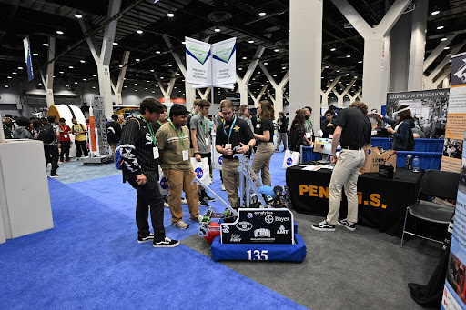
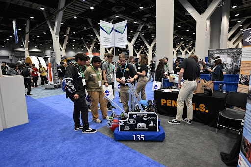
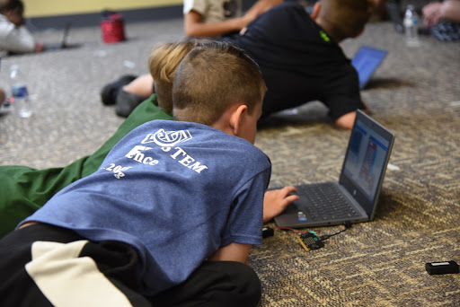
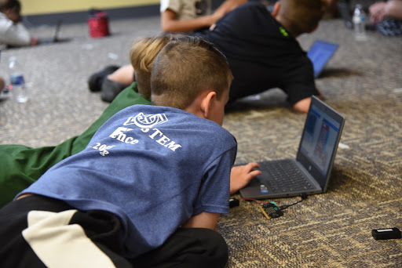
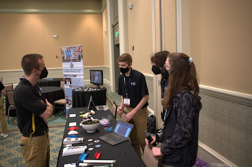
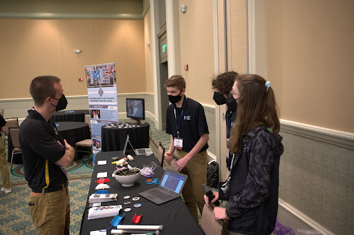

Penn Robotics Mentors went to all 11 PHM elementary schools to
mentor the Short Circuits program. Over the course of a month,
we met 4 times to teach them how to use block codes to make a
Sphero Bolt complete different complex exercises. This
culminated into a final celebration in our robotics lab where
they showcased their programs to their parents and teachers, as
well as members of our education foundation, school board
members, and our district’s superintendent. Following this
program, many more of our district’s teachers and parents are
now interested in continuing to support robotics in our schools.
On November 4, 2022, the National Science Foundation retweeted
Penn High School’s tweet, recognizing 135’s Short Circuits
program. The National Science Foundation has 1.2 million
followers on Twitter.


 



 



 
